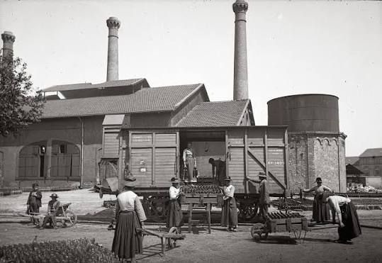

Le Verre Soufflé
du
Bassin Carmausin


⟹ Verrerie Royale & Verrerie Ouvrière ⟸
En 1754, Gabriel de Solages obtient du roi l'autorisation d'installer sur ses terres carmausines la première manufacture de bouteilles à fours chauffés au charbon de terre de tout le Languedoc. Cette Verrerie Royale, sœur aînée de la future Verrerie Ouvrière d'Albi, profite de la proximité immédiate du charbon extrait dans les mines voisines pour alimenter ses fours, tandis que le vignoble tout proche de Gaillac lui assure des débouchés constants en bouteilles.

L'activité se développe tout au long du XIXe siècle : en 1882, la verrerie emploie environ 300 ouvriers et produit près de 21 000 bouteilles par jour, les souffleurs étant rémunérés à la pièce soufflée. En 1884, l'industriel Rességuier modernise l'outil de production en installant un four Siemens à régénération et fonde la Société Anonyme des Verreries de Carmaux ; la même année, les ouvriers, soucieux de défendre leur métier face à la mécanisation naissante, créent leur propre chambre syndicale.
On disait qu'un souffleur ne tenait vraiment « sa main » qu'après de longues années passées devant la chaleur du four.
— Tradition orale des verriers du CarmausinEn 1895, le licenciement d'un ouvrier syndiqué déclenche une grève suivie d'un lock-out patronal. Une partie des verriers renvoyés fondent alors en 1896, avec le soutien actif de Jean Jaurès, la Verrerie Ouvrière d'Albi : une verrerie coopérative gérée par les ouvriers eux-mêmes, toujours en activité aujourd'hui et devenue un symbole du mouvement social français.
Bouteillerie industrielle : usage historique et fondateur de la filière, pour alimenter notamment le vignoble voisin de Gaillac.
Verre d'art contemporain : la Biennale des Verriers réunit tous les deux ans des artistes qui réinventent le geste du souffleur.
Arts de la table et décoration : carafes, vases et objets soufflés perpétuent un savoir-faire technique exigeant.
Mémoire ouvrière et coopérative : le verre carmausin reste indissociable de l'histoire syndicale et de l'aventure de la Verrerie Ouvrière d'Albi.
Le bassin carmausin, à une trentaine de kilomètres au nord d'Albi, concentre l'essentiel des lieux de mémoire liés au travail du verre en pays tarnais.
Carmaux et le Domaine de la Verrerie, où l'ancienne manufacture royale abrite aujourd'hui le musée dédié au verre.
Blaye-les-Mines commune de l'agglomération carmausine, qui accueille également le bâtiment du Musée/Centre d'art du Verre.
Albi où la Verrerie Ouvrière, fondée par les verriers de Carmaux, poursuit son activité plus d'un siècle après sa création.
Biennale des Verriers rendez-vous incontournable des amateurs d'art du feu, organisé au Domaine de la Verrerie depuis une vingtaine d'années.